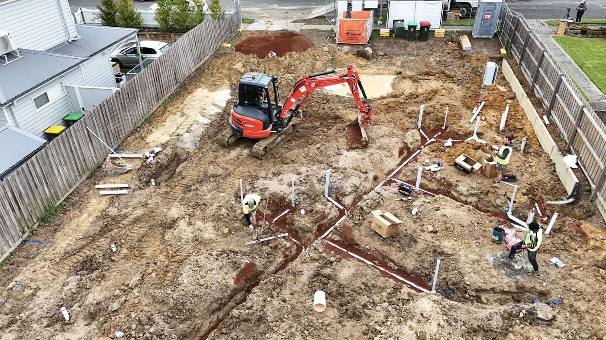

What we do
Connected, renewed and signed off in Frankston
Whether it's a single connection or the full underground stage of a Frankston build, we lay it properly and land the paperwork with it. Because we're VBA-notified, a Certificate of Compliance is issued on completion and lodged in the PIC system, so it's there for your inspector, a future sale and your own records. It's the same sewer and stormwater service we run across the Peninsula, close by in Frankston.
- Sewer and stormwater connections
- Sewer and stormwater renewals
- New-build and renovation drainage
- Cut & seal sewer on demolition sites
- VBA-notified, compliance issued